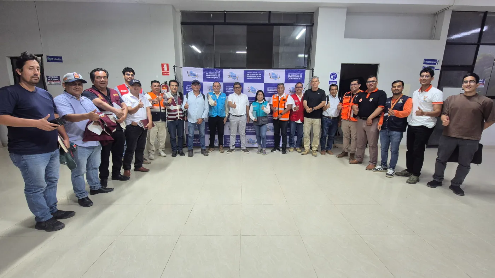

Chiclayo
Chiclayo, Pimentel y Pampagrande.
Propuesta académica de rediseño (UTP). No es el sitio oficial de EPSEL.
Desde 1930 llevamos el agua potable a Chiclayo. Hoy damos agua y desagüe en Chiclayo, Lambayeque y Ferreñafe.

Contribuir a mejorar la calidad de vida de la población de Lambayeque, brindando servicios de saneamiento eficientes y de calidad que ayuden a preservar el medio ambiente, obteniendo niveles de rentabilidad que permitan su desarrollo empresarial y de su personal.
Organización entre las más importantes del sector y del país, con personal dispuesto al cambio, motivado y que trabaje en equipo, cuya gestión empresarial basada en criterios técnicos esté orientada a la satisfacción del cliente.
Empiezan a funcionar el agua potable y el desagüe de Chiclayo, a cargo de la municipalidad.
El servicio pasa al Ministerio de Fomento y Obras Públicas.
Pasa al Ministerio de Vivienda y Construcción, y se crea SENAPA (Sistema Nacional de Agua Potable y Alcantarillado).
SENAPA crea SEDALAMBAYEQUE para administrar los servicios de Chiclayo.
Las acciones pasan a las municipalidades provinciales de Chiclayo, Lambayeque y Ferreñafe.
El 6 de junio se convierte en empresa municipal: EMAPAL.
El 20 de noviembre EMAPAL pasa a llamarse EPSEL S.A. El 3 de diciembre se instala su primera Junta General de Accionistas, con las municipalidades distritales.
Unimos capacidades para alcanzar nuestros objetivos.
Con nosotros mismos y con los demás.
Respetamos las leyes de salud pública y de protección del ambiente.
Sabemos lo que necesitan nuestros clientes y trabajamos para ellos.
Asumimos los retos de cada día y nos preparamos para el futuro.
La dignidad humana es nuestro compromiso social.
EPSEL está en el Régimen de Apoyo Transitorio (RAT): el OTASS, organismo del Ministerio de Vivienda, apoya su gestión para mejorar el servicio.
EPSEL se organiza en Chiclayo y tres zonales. Cada localidad tiene su oficina: búscala en oficinas y teléfonos.
Chiclayo, Pimentel y Pampagrande.
Lambayeque, San José, Mochumí, Túcume, Íllimo, Pacora, Jayanca, Salas, Motupe y Olmos.
Ciudad Eten, Puerto Eten, Reque, Mocupe, Nueva Arica, Oyotún, Santa Rosa y Zaña.
Ferreñafe, Picsi, Posope Alto y Batangrande.
Quién hace qué con el agua en el Perú.